- Módulo: Sistemas Operativos
- Título del trabajo "Dominios"
- Componentes del grupo: Yolanda Maria Glez Montelongo
- Curso Académico: 2013/2014
- Fecha de entrega: 24 de Abril de 2014
Para esta practica de Dominios, utilizaremos "GitHub", un servidor de Internet muy parecido a un almacenamiento de datos y archivos en repositorios previamente creados al hacerte una cuenta, donde subiremos nuestro trabajo de PDC(Controlador Primario de Dominio) en Windows Server, añadiendolo al repositorio de GIT, por comandos, desde nuestro equipo.
Para comenzar con el tema de Dominios, necesitamos configurar 5 MV esenciales para las proximas practicas. En las siguientes imagenes se ve la configuracion de IP que se pide para dichas MV:
-> MV1: SO Windows 2008 Server Enterprise
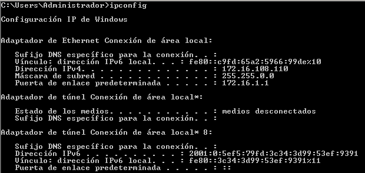
-> MV2: SO Windows 7 Enterprise
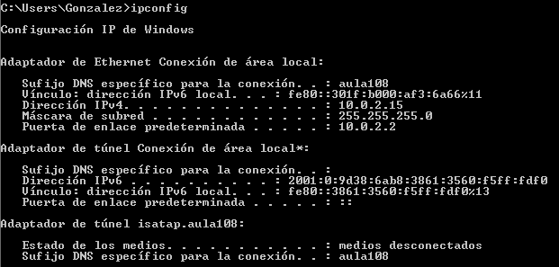
-> MV3: SO GNU/Linux Debian7
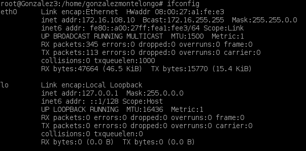
-> MV4: SO GNU/Linux OpenSUSE 13.1
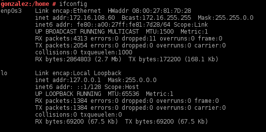
Primero que nada tenemos que hacernos una cuenta de GitHub en la pagina oficial (www.github.com) y dentro de esa cuenta, crear un repositorio llamado "idp1314nombre-del-alumno" (obligatoriamente marcaremos la opcion "Initialize this repository with a README" para que el repositorio contenga al menos un fichero)
Luego, comenzaremos con la instalacion en el equipo local del servidor GIT y a continuacion, configuramos el email y el nombre del usuario GIT que tenemos

Generamos el par de claves publica/privada

Para ver la clave publica utilizaremos la ruta /mnt/asir/home/.ssh/id_rsa.pub. que se especifica en la imagen anterior
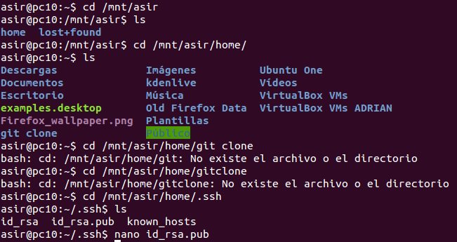
Añadimos la clave al repositorio de GitHub mediante la cuenta que creamos antes de empezar
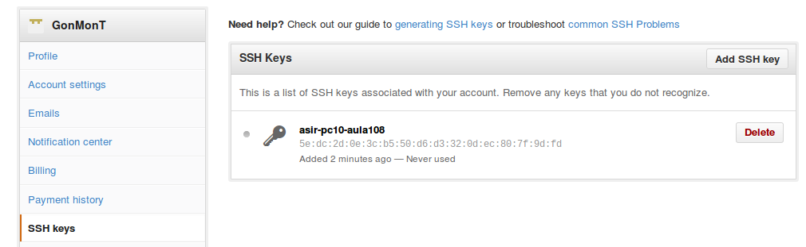
Ahora, clonamos el repositorio remoto en el equipo local mediante el comando git clone git@github.com:usuario-git/idp1314-nombre-del-alumno.git
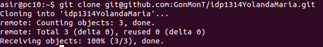
Y apartir de aqui, con el comando cd idp1314-nombre-del-alumno comenzamos a trabajar, creando carpetas y ficheros en el repositorio GIT
Para probar que nos funciona el tema de crear carpetas y ficheros y poderlos subir al repositorio remoto de GIT, haremos un prueba:
1 -> Creamos un directorio llamado "Trim3", un documento de texto llamado "prueba.txt" y luego con el comando git status comprobamos que estan guardados los nuevos cambios en el repositorio remoto
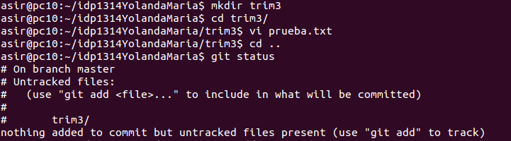
2 -> Añadimos la carpeta que hemos creado con un mensaje informativo que nos ayudara a encontrarla en el repositorio
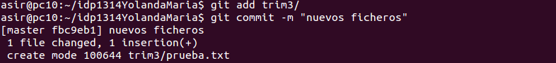
3 -> Subimos al repositorio mediante el comando git push los nuevos cambios
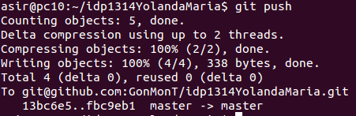
4 -> Vemos el estado del repositorio GitHub
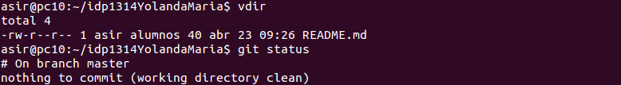Un PDC (Controlador Primario de Dominios) o un "Primary Domain Controller" es un servidor en una red de Windows que mantiene un directorio activo de cuentas de usuario e informacion de seguridad. Nosotros instalaremos uno en un Windows Server, que en este caso sera un Windows 2008 Server
Normalmente, cuando instalamos el SO, el DNS suele venir ya configurado...pero en nuestro caso, como a la MV le configuramos las IPs, tambien le configuramos el DNS. En la imagen siguiente, se ve como se instala la funcion del DNS que en la MV estaba inhabilitada
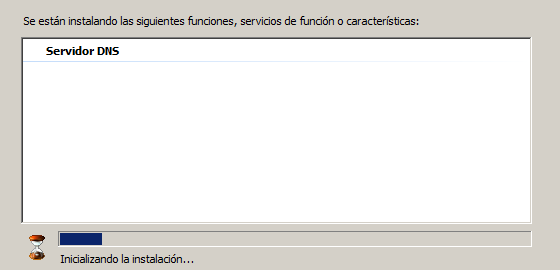